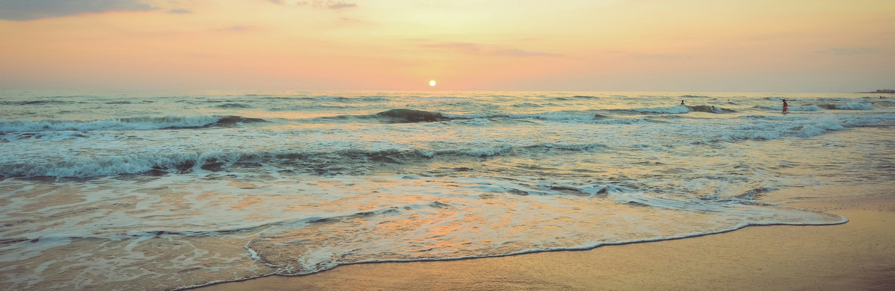

Basic terms to know as a beginner surfer! It'll help you get started on your journey to surfing!
| Surfing Terms | ||
|---|---|---|
| # | Term | Definition |
| 1 | Swell | The waves traveling toward the shore |
| 2 | Break | The place where a wave breaks |
| 3 | Lineup | The area where surfers wait for waves |
| 4 | Peak | The highest or first-breaking part of a wave |
| 5 | Duck dive | Diving under an incoming wave while paddling out |
| 6 | Takeoff | The moment a surfer catches and stands on a wave |
| 7 | Bottom turn | A turn at the bottom of the wave used to set up the next maneuver |
| 8 | Cutback | Turning back toward the breaking part of the wave |
| 9 | Offshore wind | Wind blowing from land toward the ocean, often helping waves stay cleaner |
| 10 | Longboard | A longer, more stable surfboard, generally suited to smaller or slower waves |